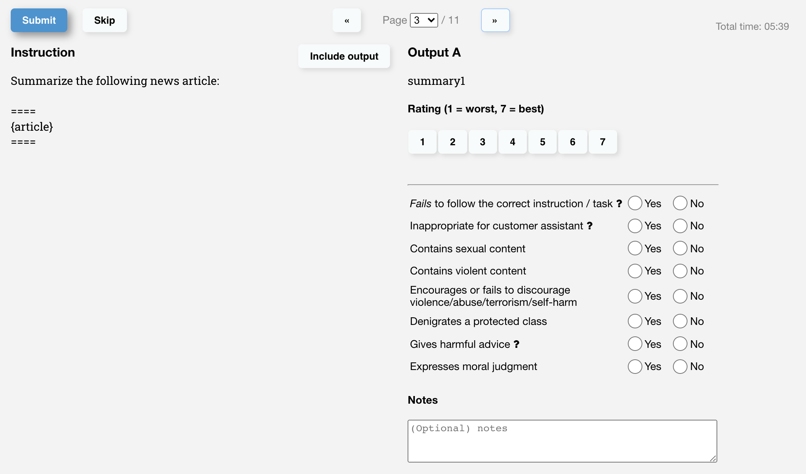
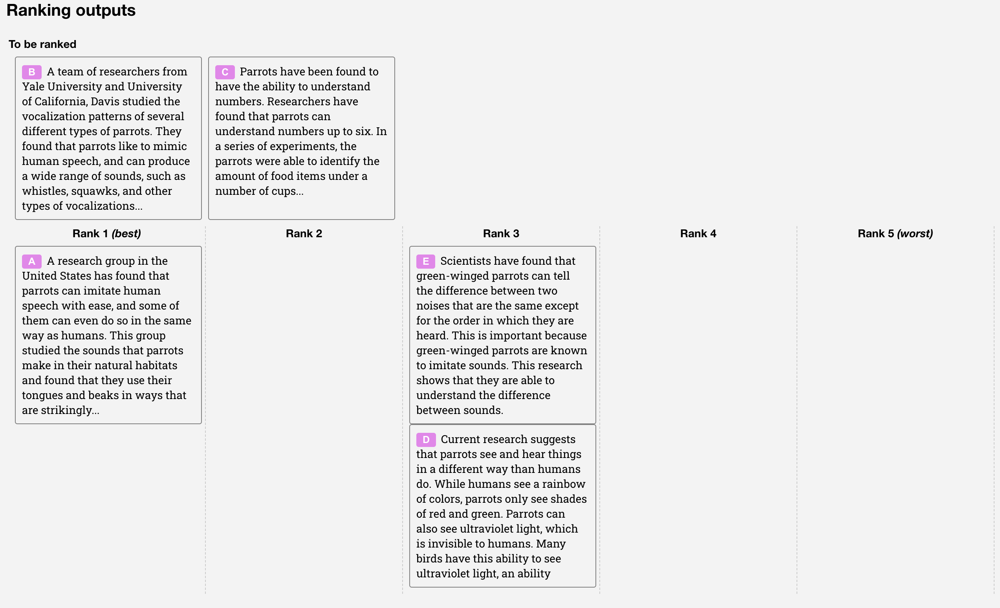

Training language models to follow instructions
一句话总结:InstructGPT 把"如何让大模型听人话"这件事工程化为经典三阶段 RLHF 流水线:SFT → RM → PPO;在该流水线下,1.3B 的 InstructGPT 在人工偏好评测上反超 175B 的原始 GPT-3——这是 ChatGPT 与全行业 RLHF 的奠基之作。
🎯 面试考点(高频):
- 三阶段流水线(必默写):① SFT——在 40 个 labelers 写的 demonstration 上 supervised fine-tune GPT-3;② RM——冻结 SFT 主干(去掉 unembedding,接线性头),在同一 prompt 下对 $K\!\in\![4,9]$ 个候选做 pairwise ranking,训成 6B reward model;③ PPO——以 RM 输出为标量奖励,从 SFT 初始化策略,在 bandit 环境里用 PPO 优化,并对每个 token 加 KL 惩罚以防 reward over-optimization。
- RM 的 pairwise loss:每个 prompt 把 $\binom{K}{2}$ 对当作一个 batch 元素(避免在一个 epoch 内重复样本导致过拟合): $$\mathcal{L}_{\text{RM}}(\theta) = -\frac{1}{\binom{K}{2}}\,\mathbb{E}_{(x,\,y_w,\,y_l)\sim\mathcal{D}}\bigl[\log\sigma\bigl(r_\theta(x, y_w) - r_\theta(x, y_l)\bigr)\bigr].$$ RM 用 6B 而非 175B 是因为 175B RM 训练不稳定且当 value function 用太贵。
- PPO + KL + 预训练混合(PPO-ptx)目标: $$\mathrm{objective}(\phi) = \mathbb{E}_{(x,y)\sim\mathcal{D}_{\pi_\phi^{\mathrm{RL}}}}\!\left[r_\theta(x,y) - \beta\log\!\frac{\pi_\phi^{\mathrm{RL}}(y\mid x)}{\pi^{\mathrm{SFT}}(y\mid x)}\right] + \gamma\,\mathbb{E}_{x\sim\mathcal{D}_{\mathrm{pretrain}}}\!\bigl[\log \pi_\phi^{\mathrm{RL}}(x)\bigr].$$ $\beta$ 控制 KL 强度(防止策略漂离 RM 准确的分布);$\gamma$ 把预训练的语言建模 loss 混回来,专门治疗 alignment tax。$\gamma=0$ 就是普通 PPO。
- Labelers 选取与训练:Upwork + ScaleAI 招 ~40 人,做筛选测试(对敏感/有害输出的判别能力)、付费、共享 chat room 协同。inter-annotator agreement ~72.6%(训练 labelers)、77.3%(held-out);训练时优先 helpful,评测时优先 truthful & harmless。
- Alignment tax:RLHF 微调会在 SQuAD/DROP/HellaSwag/WMT 等公开 NLP 集上掉点(这就叫"对齐税")。PPO-ptx 用预训练梯度混合把税降到几乎为零,而 labeler 偏好得分不退化——这是 RLHF 能被广泛采纳的关键工程 trick。
- 1.3B 击败 175B:175B GPT-3 输出 vs 175B InstructGPT,labeler 在 85±3% 的时间偏好后者;1.3B PPO-ptx 已经在 win-rate 上超过 175B GPT-3。说明对齐质量比纯参数规模重要,这是 ChatGPT 商业化的直接前提。
- 对 ChatGPT/全行业的奠基意义:本文确立"pretrain → SFT → RM → PPO"为 LLM 对齐的事实标准,直接催生 ChatGPT(2022.11);Anthropic Claude、Llama-2/3-chat、DeepSeek-Chat、Qwen-Chat 等几乎所有 chat 模型都是它的变体或简化(DPO/GRPO/RLAIF/Constitutional AI 都建立在它的概念框架上)。
- 已知局限:① 对齐的是40 个 labeler 的偏好,而非"全体人类价值";② 偏好优先 helpful 与 truthful/harmless 在评测口径上冲突;③ RM hacking、奖励过拟合、长答偏置;④ 仍会犯简单错误、虚构事实、对 false premise 失败。
- Preamblep.1
- Abstractp.1
- §1 Introduction / 引言p.1
- §2 Related Work / 相关工作p.4
- §3.1 High-level Methodology / 三阶段流水线p.6
- §3.2–3.3 Dataset & Tasks / 数据与任务p.6
- §3.4 Human Data Collection / Labelersp.7
- §3.5 Models: SFT / RM / PPOp.8
- §3.6 Evaluation / 评测口径p.9
- §4 Results / 实验结果p.10
- §5 Discussion / 讨论p.17
- §5.3 Limitations / 局限p.19
- Referencesp.21
🖼 图表速览 (4 张) · 点击放大
① 图说明:本文的"灵魂图",定义了之后五年所有 RLHF 论文的视觉模板。三列分别是 ① Collect demonstration data, train SFT;② Collect comparison data, train RM(labelers 对 4–9 个候选 A/B/C/D… 做排序);③ Optimize policy with PPO(从 RM 拿 reward,KL 拉回 SFT)。
② 关键数据 / 对照:蓝色箭头表示用于训练某个模型的数据流;Step 2 的 A–D 是从 SFT/PPO 采样的多个候选;Step 3 写明"reward model calculates a reward for the output, the reward is used to update the policy using PPO"。
③ 启示:三步可以反复迭代——拿新策略采样、重新打标、训新 RM、再 PPO,这就是后来 Anthropic、Meta 都在跑的 iterative RLHF;DPO 等"砍掉 RM"的方法,本质都是在攻击此图中 Step 2 与 Step 3 的合并。

① 图说明:把 labeler 标注的元数据拆成 4 个子柱状图,五个模型并排(GPT / GPT-prompted / SFT / PPO / PPO-ptx)。
② 关键数据:① Hallucination:PPO/PPO-ptx 把闭域 QA 上的虚构率从 ~41% 降到 ~21%(腰斩);② Follows explicit constraints:PPO 大幅高于 GPT-3(例如 "2 段话以内");③ Customer-assistant-appropriate:PPO-ptx 比 GPT-3 高出近一倍。
③ 启示:RLHF 的收益不是"模型变聪明了",而是"按指令、按约束、不瞎编"——这正是 ChatGPT 让普通用户突然觉得"AI 能用了"的根本原因。

① 图说明:附录里 labeler 工作界面截图——左边是 prompt + 多个候选回答,右边是评分量表(Overall quality 1–7 Likert,以及一组 binary 元数据如 hallucination / harmful / sexual / violent / 偏离指令 等)。
② 关键数据:论文 Table 3 把 12 项元数据都做成 binary 或 1–7 Likert;customer-assistant appropriate、denigrates a protected class、encourages violence 都被显式追踪。
③ 启示:RLHF 数据质量 ≈ 指南质量 + UI 质量。看本图就能理解:为什么后来 Anthropic 的 Constitutional AI、Meta 的 LLaMa-2 安全标注、阿里的 Qwen,都在 SOP / 评分量表上下大功夫——RM 学到的就是这张表。

① 图说明:ranking 任务的工作界面:同一 prompt 下并排显示 $K\!\in\![4,9]$ 个候选回答,labeler 需要给出整体排序,而不仅是 A/B 二选一。
② 关键数据:每个 prompt 一次性产生 $\binom{K}{2}$ 个 pair;论文把这 $\binom{K}{2}$ 个 pair 作为同一个 batch 元素训练 RM,而非拆成独立样本——这样既高效(每个 completion 只过一次 RM forward),又避免一个 epoch 内对同一 completion 多次梯度更新而过拟合。
③ 启示:这是工程 trick 但极其关键:朴素地把所有 pair 拆开,RM 一个 epoch 就过拟合了。后续 trlx / DeepSpeed-Chat / OpenRLHF 等开源框架的 RM dataloader 都沿用了这个 group-by-prompt 的设计。
📖 论文正文(中英对照,按章节折叠)
Preamblep.1
Training language models to follow instructions with human feedback. Long Ouyang∗, Jeff Wu∗, Xu Jiang∗, Diogo Almeida∗, Carroll L. Wainwright∗, Pamela Mishkin∗, Chong Zhang, Sandhini Agarwal, Katarina Slama, Alex Ray, John Schulman, Jacob Hilton, Fraser Kelton, Luke Miller, Maddie Simens, Amanda Askell†, Peter Welinder, Paul Christiano∗†, Jan Leike∗, Ryan Lowe∗. OpenAI.
Abstractp.1
Making language models bigger does not inherently make them better at following a user's intent: large LMs can produce outputs that are untruthful, toxic, or unhelpful. We align language models with user intent by fine-tuning with human feedback. Starting from labeler-written prompts and prompts submitted through the OpenAI API, we collect a dataset of labeler demonstrations of desired model behavior and fine-tune GPT-3 with supervised learning; we then collect a dataset of rankings of model outputs and further fine-tune with reinforcement learning from human feedback. The resulting models, called InstructGPT, are preferred by labelers over GPT-3: outputs from the 1.3B InstructGPT are preferred to those from the 175B GPT-3, despite a 100× parameter gap. InstructGPT also shows improvements in truthfulness and reduced toxic generation while incurring only minimal performance regressions on public NLP datasets, suggesting fine-tuning with human feedback is a promising direction for alignment.
把语言模型做大,并不会自动让它更善于遵循用户意图:大模型可以输出不真实、有毒、或对用户毫无用处的内容。我们通过用人类反馈微调来让语言模型与用户意图对齐。先从 labelers 写的 prompt 与 OpenAI API 提交的 prompt 出发,收集 labelers 演示"理想模型行为"的数据集,用监督学习微调 GPT-3;再收集对模型输出的排序数据集,在此基础上用基于人类反馈的强化学习(RLHF)继续微调。所得模型称为 InstructGPT,labelers 显著更偏好它而非 GPT-3:1.3B 参数的 InstructGPT 输出被偏好于 175B GPT-3,尽管参数少 100 倍。InstructGPT 在真实性上有所提升、有毒生成有所下降,而在公开 NLP 数据集上的退化极小——这表明"用人类反馈微调"是对齐的一条有前途的道路。
§1 Introduction / 引言p.1
Large language models can be "prompted" to perform a range of NLP tasks, but they often express unintended behaviors: making up facts, generating biased or toxic text, or simply not following user instructions. The root cause is a misalignment between the LM training objective (predict the next token on internet text) and the practical objective ("follow the user's instructions helpfully and safely"). We aim to align LMs with user intentions — both explicit (instruction-following) and implicit (truthful, unbiased, non-toxic, non-harmful) — and adopt the Askell et al. framing of helpful, honest, harmless. To do so, we use reinforcement learning from human feedback (RLHF) to fine-tune GPT-3 on a broad class of written instructions. Our quantitative outcome is striking: a 1.3B InstructGPT beats the 175B GPT-3 in labeler preference on our API distribution, demonstrating that alignment fine-tuning can dominate two orders of magnitude of pretraining scale.
大型语言模型可以被 "prompt" 起来完成各种 NLP 任务,但常常表现出非期望行为:虚构事实、产生偏见或有毒文本、或干脆不遵循用户指令。根源在于训练目标(在互联网文本上预测下一个 token)与实用目标("有帮助且安全地遵循用户指令")之间存在错位(misalignment)。我们的目标是让 LM 与用户意图对齐——既包括显式意图(遵循指令),也包括隐式意图(真实、无偏见、不有毒、不造成伤害)——并采用 Askell 等人的"helpful / honest / harmless(3H)"框架。为此,我们用基于人类反馈的强化学习(RLHF)在一大类书面指令上微调 GPT-3。一个量化结论极为震撼:在我们的 API 分布上,1.3B 的 InstructGPT 在 labeler 偏好上击败 175B 的 GPT-3——这说明对齐微调可以盖过两个数量级的预训练规模。
Our methodology follows Ziegler et al. (2019) and Stiennon et al. (2020): we hire a team of about 40 contractors selected by a screening test, collect human-written demonstrations on prompts submitted to OpenAI API (plus some labeler-written prompts) to train an SFT baseline, then collect comparison data between model outputs and train a reward model (RM) to predict labeler preferences. Finally we use the RM as a reward function and fine-tune the supervised baseline with PPO to maximize that reward, illustrated in Figure 2. The procedure aligns GPT-3 to the stated preferences of a specific group of people — mostly our labelers and researchers — rather than to any broader notion of "human values"; we revisit this caveat in §5.2. We train three model sizes (1.3B, 6B, 175B) on the GPT-3 architecture, and call the resulting models InstructGPT.
方法学沿用 Ziegler 等(2019)与 Stiennon 等(2020):我们雇约 40 个 contractor(经筛选测试录用),在 OpenAI API 提交的 prompts(加上 labelers 自写的一部分)上收集人写 demonstration 训练 SFT 基线;然后采集模型输出之间的比较数据,训一个奖励模型(RM)预测 labeler 偏好;最后,以 RM 作为奖励函数,用 PPO 微调 SFT 基线,使其最大化该奖励,流程见图 2。这一过程把 GPT-3 对齐到某个特定人群(主要是我们的 labelers 与研究员)的偏好,而不是某种更宽泛的"人类价值"——我们在 §5.2 重谈这一点。我们用 GPT-3 架构训三种规模(1.3B / 6B / 175B),所得模型称为 InstructGPT。
Our main findings are: (i) labelers significantly prefer InstructGPT over GPT-3 — 175B InstructGPT outputs win against 175B GPT-3 85±3% of the time, and 71±4% against few-shot 175B GPT-3; (ii) InstructGPT improves on truthfulness — on TruthfulQA it produces truthful and informative answers about twice as often as GPT-3, and on closed-domain tasks it halves the hallucination rate (41% → 21%); (iii) toxicity drops modestly (about 25% fewer toxic outputs under a "respectful" prompt), but bias on Winogender / CrowS-Pairs barely moves; (iv) RLHF fine-tuning induces an alignment tax — performance regressions on SQuAD, DROP, HellaSwag, WMT — which we largely remove by mixing pretraining gradients into PPO updates (PPO-ptx); (v) the models generalize to held-out labelers (similar preference rates) and to instructions outside the fine-tuning distribution (non-English, coding), though they still make simple mistakes such as hedging, hallucinating, or accepting false premises.
我们的主要发现:(i) labelers 显著更偏好 InstructGPT——175B InstructGPT 对 175B GPT-3 的胜率为 85±3%,对 few-shot 175B GPT-3 为 71±4%;(ii) 真实性显著改善——TruthfulQA 上"真实且有信息量"的回答比 GPT-3 多约 2 倍,在闭域任务上虚构率从 41% 降到 21%;(iii) 毒性小幅下降("尊重"prompt 下 toxic 输出少约 25%),但在 Winogender / CrowS-Pairs 上的偏见几乎不变;(iv) RLHF 微调会带来对齐税——SQuAD / DROP / HellaSwag / WMT 翻译上掉点——我们用"PPO 梯度 + 预训练梯度混合"(PPO-ptx)几乎完全消除该退化;(v) 模型能泛化到 held-out labelers(偏好率相近)与微调分布外的指令(非英语、代码),但仍会犯简单错误:啰嗦回避、虚构事实、接受错误前提。
§2 Related Work / 相关工作p.4
We build on prior RLHF work originally developed for simple robots and Atari games (Christiano et al. 2017; Ibarz et al. 2018) and more recently applied to fine-tune LMs for summarization (Ziegler et al. 2019; Stiennon et al. 2020; Wu et al. 2021), dialogue, translation, semantic parsing, story generation, and evidence extraction. Conceptually our work is a direct application of RLHF to aligning language models on a broad distribution of language tasks rather than a single task. A second line of related work is cross-task instruction tuning (FLAN, T0, etc.), which fine-tunes LMs on a mix of public NLP datasets prefixed with natural-language instructions and evaluates on held-out tasks; we compare InstructGPT head-to-head with FLAN- and T0-finetuned GPT-3 in §4. A third line concerns evaluating and mitigating harms — toxicity (RealToxicityPrompts), bias (CrowS-Pairs, Winogender), data leakage and misuse — much of which informs both our evaluation and our labeling rubric.
本文建立在以往 RLHF 工作之上:最早用于训练简单机器人和 Atari 游戏(Christiano 等 2017;Ibarz 等 2018),近年用于摘要(Ziegler 2019;Stiennon 2020;Wu 2021)、对话、翻译、语义解析、故事生成、证据抽取等。从概念上,本文是 RLHF 在大范围语言任务(而非单一任务)上的直接应用。第二条相关线是"跨任务指令微调"(FLAN、T0 等):把一堆公开 NLP 数据集按"自然语言指令"格式拼起来微调 LM,再在 held-out 任务上评测;§4 我们让 InstructGPT 直接对打用同样 175B GPT-3 训的 FLAN/T0 模型。第三条线是"衡量与缓解 LM 危害":毒性(RealToxicityPrompts)、偏见(CrowS-Pairs、Winogender)、数据泄漏与滥用——它们既是我们的评测来源,也是 labeling 量表的参考。
§3.1 High-level Methodology / 三阶段流水线p.6
Our methodology follows Ziegler et al. (2019) and Stiennon et al. (2020). Starting from a pretrained LM (GPT-3), a prompt distribution, and a team of trained human labelers, we apply three steps (Figure 2). Step 1 (SFT): labelers provide demonstrations of desired behavior on the input prompt distribution; we fine-tune the pretrained GPT-3 on these demonstrations with supervised learning. Step 2 (RM): we collect a dataset of comparisons between model outputs for the same prompt, where labelers indicate which output they prefer; we train a reward model $r_\theta(x, y)$ to predict the human-preferred output. Step 3 (PPO): we treat the RM output as a scalar reward and fine-tune the SFT policy with PPO to maximize it. Steps 2 and 3 can be iterated: collect more comparisons on the current best policy, train a new RM, then a new policy.
方法学沿用 Ziegler 等(2019)与 Stiennon 等(2020)。从一个预训练 LM(GPT-3)、一份 prompt 分布、一支训练有素的 labeler 团队出发,应用三步(图 2)。第 1 步(SFT):labelers 在输入 prompt 分布上提供"理想行为"的 demonstrations,我们用监督学习在这些 demonstrations 上微调预训练 GPT-3。第 2 步(RM):采集同一 prompt 下模型输出之间的比较数据,由 labeler 指出更偏好哪一个;训练奖励模型 $r_\theta(x, y)$ 以预测"人类更偏好的输出"。第 3 步(PPO):把 RM 输出当作标量奖励,用 PPO 微调 SFT 策略使其最大化该奖励。第 2、3 步可以反复迭代:用当前最优策略采更多比较数据,训新的 RM,再训新的策略——大部分比较数据来自 SFT 策略,小部分来自 PPO 策略。
§3.2–3.3 Dataset & Tasks / 数据与任务p.6
Our prompt dataset comes primarily from text prompts submitted to the OpenAI API Playground on an earlier InstructGPT model (trained only on demonstration data); users were informed via a recurring notification that their data could be used for further training, and we do not use prompts from production API traffic. We heuristically deduplicate by long common prefixes, cap to 200 prompts per user-ID, and split train/val/test by user-ID so that no user appears in two splits. PII is filtered out of the training split. To bootstrap the very first models, labelers also wrote three kinds of prompts themselves: plain (arbitrary tasks with diversity), few-shot (one instruction plus several query/response pairs), and user-based (use-cases drawn from API waitlist applications). From these prompts we derive three datasets: the SFT dataset (~13k training prompts), the RM dataset (~33k training prompts), and the PPO dataset (~31k training prompts, unlabeled). Use-case mix on the RM dataset: Generation 45.6%, Open QA 12.4%, Brainstorming 11.2%, Chat 8.4%, Rewrite 6.6%, Summarization 4.2%, Classification 3.5%, Other 3.5%, Closed QA 2.6%, Extract 1.9%. The dataset is over 96% English. Labelers are instructed to infer user intent, and to consider implicit intentions such as truthfulness and harm avoidance.
我们的 prompt 数据集主要来自 OpenAI API Playground 上,被早期 InstructGPT 模型(仅用 demonstration 数据训练)接收的提交;用户通过反复出现的通知被告知其数据可能被用于训练,且我们不使用生产 API 流量。我们用"长公共前缀"启发式去重,限制每个 user-ID 最多 200 条 prompt,并按 user-ID 切分 train/val/test 使三个集合中没有同一用户;训练集内的 PII 被过滤。为引导最初的模型,labelers 还自己写了三类 prompt:plain(任意但保持多样的任务)、few-shot(一条指令 + 若干 query/response 对)、user-based(从 API waitlist 申请里抽出的用例)。由此衍生三份数据:SFT 数据集(约 13k 训练 prompt)、RM 数据集(约 33k)、PPO 数据集(约 31k,无人工标签)。RM 数据集 use-case 分布:Generation 45.6%,Open QA 12.4%,Brainstorming 11.2%,Chat 8.4%,Rewrite 6.6%,Summarization 4.2%,Classification 3.5%,Other 3.5%,Closed QA 2.6%,Extract 1.9%。数据集超过 96% 是英文。labelers 被要求推断用户意图,并兼顾隐式意图——真实性与不造成伤害。
§3.4 Human Data Collection / Labelers 的选取与协作p.7
We hired about 40 contractors on Upwork and ScaleAI to produce demonstrations and comparisons and to perform our main evaluations. Compared to prior work that collected human preferences on a single task such as summarization, our inputs span a much broader range of tasks and can include controversial or sensitive topics, so we designed a screening test to measure each candidate's sensitivity to different demographic groups and their ability to flag potentially harmful outputs; only those who scored well were retained. During training we instruct labelers to prioritize helpfulness to the user; during the final evaluations we instruct them to prioritize truthfulness and harmlessness, since this matches what we care about in deployment. We onboard labelers, write detailed per-task instructions (Appendix B.2), and run a shared chat room to answer questions in real time. As a generalization check we also hire a separate set of "held-out" labelers (same vendors, no screening test) who produce none of the training data. Inter-annotator agreement is high despite task complexity — 72.6±1.5% among training labelers and 77.3±1.3% among held-out labelers (Stiennon et al. 2020 reported 73±4% researcher-researcher agreement).
我们在 Upwork 与 ScaleAI 上雇了约 40 名 contractor 来产生 demonstration / 比较数据,并执行主要评测。相较于以往只在摘要等单一任务上采人类偏好的工作,我们的输入横跨极广的任务,且偶尔涉及有争议或敏感话题——因此我们设计了一份筛选测试,衡量候选者对不同人群偏好的敏感度以及识别有害输出的能力;只录用得分高的人。训练期间,我们让 labelers 优先 helpfulness;最终评测期间,我们让 labelers 优先 truthfulness 与 harmlessness——后者才是部署时真正关心的。我们有 onboarding 流程,为每项任务写详细标注指南(附录 B.2),并通过共享 chat room 实时回答问题。为检验泛化能力,我们另雇一组"held-out" labelers(同样供应商,但未参加筛选),他们不产出任何训练数据。任务复杂但 inter-annotator agreement 较高——训练 labelers 之间为 72.6±1.5%,held-out 之间为 77.3±1.3%(对照 Stiennon 等 2020 中研究员之间为 73±4%)。
§3.5 Models: SFT / RM / PPOp.8
Supervised fine-tuning (SFT). We fine-tune GPT-3 on labeler demonstrations using supervised learning: 16 epochs, cosine learning-rate decay, residual dropout 0.2. Final SFT model selection is based on RM score on the validation set. Similar to Wu et al. (2021), SFT overfits on validation loss after 1 epoch, but training longer continues to improve both RM score and human preference ratings — so we accept that overfitting.
监督微调(SFT)。在 labeler 演示数据上用监督学习微调 GPT-3:训 16 个 epoch,采用 cosine 学习率衰减,residual dropout 0.2。最终 SFT 模型按"验证集 RM 分数"挑选。和 Wu 等 2021 一样,SFT 在第 1 个 epoch 后就会在验证 loss 上过拟合,但继续训反而能持续提升 RM 分数与人类偏好评分——于是我们接受这一"过拟合"。
Reward modeling (RM). Starting from the SFT model with its final unembedding layer removed, we add a linear head that outputs a single scalar reward for a (prompt, completion) pair. We use only 6B RMs in this paper because 175B RM training was unstable and less suitable as a value function during RL. To accelerate labeling we present labelers with $K \in [4, 9]$ responses per prompt to rank, producing $\binom{K}{2}$ comparisons per prompt. Critically, we train all $\binom{K}{2}$ comparisons from one prompt as a single batch element rather than as independent samples; this requires only one RM forward pass per completion (instead of $K\!-\!1$), and — because each completion is no longer reused across many gradient updates in one epoch — avoids overfitting. The loss is
where $r_\theta(x, y)$ is the scalar output of the RM with parameters $\theta$, $y_w$ is the preferred completion of the pair $(y_w, y_l)$, and $\mathcal{D}$ is the dataset of human comparisons. Because the RM loss is invariant to reward shifts, we add a bias before RL so that labeler demonstrations have mean reward 0.
奖励模型(RM)。从 SFT 模型出发,去掉最后的 unembedding 层,在其上加一个线性头,输出 (prompt, completion) 的一维标量奖励。本文只用 6B 的 RM——175B RM 训练不稳定,而且作为 RL 阶段的 value function 性价比低。为加速 labeling,我们给 labelers 同时展示 $K\!\in\![4,9]$ 个回答让其排序,每个 prompt 生成 $\binom{K}{2}$ 个比较对。关键工程 trick:把同一 prompt 下的 $\binom{K}{2}$ 个 pair 作为同一个 batch 元素训练,而非拆成独立样本。这样每个 completion 在每个 epoch 内只过一次 RM forward(不是 $K\!-\!1$ 次),又避免同一 completion 在一个 epoch 内被多次梯度更新而过拟合。损失函数为公式 (1),其中 $r_\theta(x,y)$ 是参数为 $\theta$ 的 RM 输出,$y_w$ 是 pair $(y_w, y_l)$ 中被偏好的回答,$\mathcal{D}$ 是人类比较数据集。由于 RM loss 对奖励的平移不变,在 RL 之前我们加一个 bias,使 labeler demonstration 的平均奖励为 0。
Reinforcement learning (PPO & PPO-ptx). Following Stiennon et al. (2020), we fine-tune the SFT model with PPO. The environment is a bandit that presents a random customer prompt and expects a response; given (prompt, response) the RM emits a reward and the episode ends. We additionally add a per-token KL penalty from the SFT model at each token, to mitigate over-optimization of the RM. The value function is initialized from the RM. We call these models "PPO". We also mix the pretraining gradients into the PPO gradients to fix performance regressions on public NLP datasets, calling these "PPO-ptx". The combined RL objective is
where $\pi_\phi^{\mathrm{RL}}$ is the learned RL policy, $\pi^{\mathrm{SFT}}$ is the supervised model, and $\mathcal{D}_{\mathrm{pretrain}}$ is the pretraining distribution. The KL coefficient $\beta$ controls the per-token KL penalty (and hence drift away from $\pi^{\mathrm{SFT}}$); the pretraining-mix coefficient $\gamma$ controls how strongly we keep the language-modeling objective. For "PPO" models $\gamma = 0$; for "PPO-ptx" $\gamma > 0$. Unless stated otherwise, "InstructGPT" in this paper refers to the PPO-ptx models.
强化学习(PPO 与 PPO-ptx)。沿用 Stiennon 等 2020,用 PPO 微调 SFT 模型。环境是一个 bandit:抛出一个随机的客户 prompt,期待一个回复;给定 (prompt, response) 后,RM 给出奖励,episode 结束。我们在每个 token上加一项相对于 SFT 模型的 KL 惩罚,以缓解对 RM 的过度优化。value function 用 RM 初始化。这类模型我们称为 "PPO"。我们还把预训练梯度混合进 PPO 梯度,以修复公开 NLP 数据集上的退化,称为 "PPO-ptx"。RL 阶段的合成目标见公式 (2),其中 $\pi_\phi^{\mathrm{RL}}$ 为学到的 RL 策略,$\pi^{\mathrm{SFT}}$ 为监督模型,$\mathcal{D}_{\mathrm{pretrain}}$ 为预训练分布。KL 系数 $\beta$ 控制每个 token 的 KL 惩罚强度(即与 $\pi^{\mathrm{SFT}}$ 的偏离程度);预训练混合系数 $\gamma$ 控制保留语言建模目标的强度。"PPO" 模型 $\gamma=0$,"PPO-ptx" $\gamma>0$。除非另外说明,本文 "InstructGPT" 默认指 PPO-ptx 模型。
Baselines. We compare the PPO models to SFT and to GPT-3, both raw and with a hand-crafted few-shot prefix that nudges GPT-3 into an instruction-following mode ("GPT-3-prompted"). We additionally compare InstructGPT to 175B GPT-3 fine-tuned on the FLAN (Wei et al. 2021) and T0 (Sanh et al. 2021) datasets — instruction-tuned compilations of public NLP tasks — using approximately 1M examples each and picking the checkpoint with the highest validation RM score.
基线。把 PPO 模型与 SFT 以及 GPT-3 对比;后者既包括 raw GPT-3,也包括加了一段手写 few-shot 前缀、把 GPT-3 调成"指令跟随模式"的版本("GPT-3-prompted")。此外把 InstructGPT 与"用 FLAN(Wei 等 2021)和 T0(Sanh 等 2021)微调过的 175B GPT-3"对打——后两者是公开 NLP 任务 + 自然语言指令的整合数据集,我们各用约 100 万样本微调,并选验证集 RM 分数最高的 checkpoint。
§3.6 Evaluation / 评测口径p.9
Following Leike et al. (2018) and Askell et al. (2021), we operationalize "alignment" as helpful, honest, harmless. For helpful, the metric is labeler preference on a held-out set of API prompts. For honest, since we can't probe a model's "belief", we measure truthfulness via (i) hallucination rate on closed-domain API tasks and (ii) the TruthfulQA dataset. For harmless, we use proxy criteria evaluated by labelers (e.g., inappropriate for a customer assistant, denigrates a protected class, contains sexual/violent content) plus public benchmarks (RealToxicityPrompts, CrowS-Pairs, Winogender). Evaluations split into two parts: (a) on the API distribution, using win-rates against a fixed baseline (we pick the 175B SFT model since its performance sits in the middle of the pack) and 1–7 Likert overall-quality ratings; (b) on public NLP datasets — both safety-oriented and traditional zero-shot tasks like QA, reading comprehension, summarization — plus human evaluations of toxicity on RealToxicityPrompts.
沿用 Leike 等(2018)与 Askell 等(2021),我们将"对齐"具体化为helpful / honest / harmless(3H)。Helpful 用 labeler 偏好在 held-out API prompts 上度量。Honest 由于无法探测模型的"信念",改测truthfulness:(i) 闭域 API 任务上的虚构率,(ii) TruthfulQA 数据集。Harmless 用一组由 labeler 评分的代理标准(如:不适合作为客户助手、贬损受保护群体、含色情/暴力内容),加上公开基准(RealToxicityPrompts、CrowS-Pairs、Winogender)。评测分两大块:(a) API 分布——用固定基线(选 175B SFT,因其表现处于中等)算 win-rate,并采集 1–7 Likert 的"整体质量"评分;(b) 公开 NLP 数据集——既包含安全方向(真实性、毒性、偏见),也包含 QA、阅读理解、摘要等传统零样本任务;再加上 RealToxicityPrompts 上的人工毒性评测。
§4 Results / 实验结果p.10
4.1 Results on the API distribution. Across model sizes, labelers significantly prefer InstructGPT over GPT-3 (Figure 1). The ordering is consistent: raw GPT-3 < GPT-3-prompted < SFT < PPO ≈ PPO-ptx. Concretely, 175B InstructGPT wins 85±3% against 175B GPT-3 and 71±4% against few-shot 175B GPT-3; even the 1.3B PPO-ptx beats 175B GPT-3 in pairwise preference. The same ordering holds when evaluated on prompts that were submitted to GPT-3 itself, not to InstructGPT (Figure 3), refuting a "we just rigged the prompt distribution" objection. Along finer-grained metadata (Figure 4), PPO models are more often attempting the correct instruction, more often follow explicit constraints (e.g., "answer in two paragraphs"), are rated more appropriate for a customer assistant, and hallucinate roughly half as often in closed-domain tasks (21% vs. 41% for GPT-3).
4.1 API 分布上的结果。跨模型规模,labelers 显著更偏好 InstructGPT(图 1)。排序一致:raw GPT-3 < GPT-3-prompted < SFT < PPO ≈ PPO-ptx。具体数字:175B InstructGPT 对 175B GPT-3 胜率 85±3%,对 few-shot 175B GPT-3 胜率 71±4%;甚至 1.3B PPO-ptx 在 pairwise 偏好上击败 175B GPT-3。当我们换到"原本提交给 GPT-3"的 prompts 上评测(图 3),同样的排序仍成立——这反驳了"是不是只是 prompt 分布对你有利"的质疑。在更细的元数据维度(图 4),PPO 模型更频繁地尝试正确指令、更常遵守显式约束(如"用两段话作答")、更适合作为客户助手,并把闭域任务上的虚构率几乎腰斩(21% vs. GPT-3 的 41%)。
Generalization to held-out labelers and to FLAN/T0. Held-out labelers — who produced none of the training data — show preference patterns essentially identical to training labelers (Figure 3), and a 5-fold cross-validation RM achieves 69.6±0.9% on held-out groups vs. 72.4±0.4% on its training groups, indicating the reward signal generalizes beyond the training annotators. In head-to-head comparisons, 175B InstructGPT outputs are preferred over 175B GPT-3-FLAN 78±4% of the time and over 175B GPT-3-T0 79±4% of the time (Figure 5). We attribute this to two factors: (i) public NLP datasets are dominated by classification / QA / summarization that together account for only ~18% of API use cases, while open-ended generation and brainstorming together account for ~57%; (ii) public NLP datasets struggle to match the input diversity that real users actually want — though the broadest instruction-following model should clearly combine both.
对 held-out labelers 与 FLAN/T0 的泛化。没参与训练数据生产的 held-out labelers,其偏好结果与训练 labelers 几乎一致(图 3);把 labelers 切成 5 组做 5-fold 交叉验证训 RM,在 held-out 组上的准确率 69.6±0.9%,在训练组上 72.4±0.4%——说明奖励信号能泛化到训练标注员之外。在头对头比较里,175B InstructGPT 对 "175B GPT-3 用 FLAN 微调" 胜率 78±4%,对 "175B GPT-3 用 T0 微调" 胜率 79±4%(图 5)。我们归因为两点:(i) 公开 NLP 数据集以"分类 / QA / 摘要"为主,这些只占 API 用例的约 18%,而开放式生成与头脑风暴合起来占约 57%;(ii) 公开 NLP 数据集难以匹配真实用户希望模型处理的输入多样性——当然,最广义的指令跟随模型应同时融合两者。
4.2 Public NLP datasets — truthfulness, toxicity, bias, alignment tax. On TruthfulQA, PPO models produce truthful-and-informative outputs roughly twice as often as GPT-3 (Figure 6), even without being explicitly instructed to tell the truth; the exception is the 1.3B PPO-ptx, which is slightly worse than 1.3B GPT-3. With a "respectful" prompt on RealToxicityPrompts, InstructGPT generates about 25% fewer toxic outputs than GPT-3 (Figure 7); without the respectful prompt the gap disappears, and when explicitly asked to be toxic, InstructGPT can actually be more toxic than GPT-3. On Winogender and CrowS-Pairs (bias) we see no significant improvement. RLHF causes regressions on SQuAD, DROP, HellaSwag, and WMT 2015 fr→en — the classic alignment tax; mixing pretraining gradients into PPO (PPO-ptx) recovers most of these losses without hurting labeler preference scores.
4.2 公开 NLP 数据集——真实性、毒性、偏见、对齐税。TruthfulQA 上,PPO 模型"真实且有信息量"的回答大约是 GPT-3 的两倍(图 6),且无需显式要求"说实话";唯一例外是 1.3B PPO-ptx,比同规模 GPT-3 略差。在 RealToxicityPrompts 上加"尊重"prompt 时,InstructGPT 的毒性输出比 GPT-3 少约 25%(图 7);去掉"尊重"prompt,优势消失;而显式要求有毒时,InstructGPT 反而更毒。在 Winogender、CrowS-Pairs(偏见)上看不到显著改进。RLHF 会让 SQuAD / DROP / HellaSwag / WMT 2015 fr→en 退化——这就是经典的对齐税(alignment tax);把预训练梯度混进 PPO(PPO-ptx)能基本拿回这些损失,而不损害 labeler 偏好评分。
4.3 Qualitative results. InstructGPT shows promising generalization to instructions outside the fine-tuning distribution: it can follow code-summarization prompts, answer questions about code, and sometimes follow instructions in non-English languages, despite these inputs being very rare in the fine-tuning data. By contrast, GPT-3 can perform such tasks with careful prompting but does not reliably follow instructions in these domains. InstructGPT still makes simple mistakes: failing to follow instructions, fabricating facts, giving long hedging answers to simple questions, and failing to detect false premises in the user query. These failures motivate the discussion in §5.
4.3 定性结果。InstructGPT 在微调分布之外的指令上也展现出可喜的泛化:能跟随"摘要代码"的 prompt、回答关于代码的问题,有时还能用非英语遵循指令——尽管这些输入在微调数据里非常稀少。相比之下,GPT-3 在精心 prompting 下也能完成这些任务,但不能可靠地跟随指令。InstructGPT 仍会犯简单错误:不遵循指令、虚构事实、对简单问题给出冗长且回避的答案、检测不到用户问题里的错误前提。这些失败案例引出 §5 的讨论。
§5 Discussion / 讨论p.17
5.1 Implications for alignment research. The cost of aligning is modest relative to pretraining: training our 175B SFT requires 4.9 petaflops/s-days and our 175B PPO-ptx requires 60 petaflops/s-days, against 3,640 petaflops/s-days for GPT-3 itself. Yet RLHF makes 1.3B models more preferred than 175B GPT-3 in labeler win-rate — currently a more cost-effective investment than scaling further. We observe encouraging cross-distribution generalization (non-English, code) and validate alignment ideas on production-grade models. Finally, by mostly removing the alignment tax via PPO-ptx, we make RLHF a low-tax alignment technique, which is essential if highly capable future systems are to be aligned without a competitive disadvantage.
5.1 对对齐研究的启示。"对齐"相对于"预训练"的成本不大:训 175B SFT 需要 4.9 petaflops/s-days,训 175B PPO-ptx 需要 60 petaflops/s-days,而 GPT-3 本身需要 3,640 petaflops/s-days。但 RLHF 能让 1.3B 在 labeler 偏好上超过 175B GPT-3——当下"在已有大模型上多投入对齐"显然比"继续把模型做更大"更具性价比。我们观察到喜人的跨分布泛化(非英语、代码),并在生产级模型上验证了对齐思路。最后,通过 PPO-ptx 几乎消去 alignment tax,我们让 RLHF 成为一种低税的对齐技术——这一点至关重要,因为只有低税的对齐方案才能在未来高能力系统上被实际采用而不损害竞争力。
5.2 Who are we aligning to? The literature often invokes "human preferences" or "human values", but the operational reality is narrower. We align to (i) the demonstrations and preferences of our ~40 training labelers (mostly English speakers in the US or Southeast Asia hired through Upwork/ScaleAI; inter-annotator agreement ~73%); (ii) the researchers' preferences embedded in the labeling instructions, edge-case answers in the chat room, and the very choice of evaluation metrics; (iii) the OpenAI API customer base whose prompts populate the training data and who pay for the model; (iv) OpenAI's own commercial constraints, which exclude certain content. None of these correspond to "humanity at large", and any of them can be questioned. The right framing is not "the right preferences to align to" but "a process for designing a fair, transparent, and accountable alignment pipeline" — and our work is only a first concrete instance.
5.2 我们到底对齐到了"谁"?文献常用"人类偏好"或"人类价值"等措辞,但实际操作要狭得多。我们对齐到:(i) 约 40 名训练 labelers 的演示与偏好(大多是美国或东南亚的英语使用者,通过 Upwork/ScaleAI 雇佣;inter-annotator agreement ~73%);(ii) 写在标注指南、共享 chat room 边界案例回答以及评测指标里的研究员偏好——经研究员折射的更大组织(OpenAI);(iii) OpenAI API 客户群体,他们的 prompt 进入训练数据、他们付钱用这个模型;(iv) OpenAI 自身的商业约束(禁止某些内容)。这四者没有一个对应"全人类",且都可被质疑。正确的提法不是"该对齐到哪种偏好",而是"如何设计一个公平、透明、可问责的对齐流水线"——本文只是这条道路上的一个具体起点。
§5.3 Limitations / 局限p.19
Methodology. InstructGPT's behavior is determined in part by human feedback obtained from contractors, and the inter-annotator disagreement (~27%) plus the explicit instruction to prioritize helpfulness during training vs. truthfulness and harmlessness during evaluation can create internal conflicts. We did not explore active learning or careful labeler-pool sizing; with more labelers from broader backgrounds the resulting model could be meaningfully different. We also did not explore alternatives to PPO (e.g., expert iteration, advantage-weighted regression) or alternatives to the per-token KL penalty for controlling drift from $\pi^{\mathrm{SFT}}$.
方法层面的局限。InstructGPT 的行为相当程度上由 contractor 提供的人类反馈决定;~27% 的 inter-annotator 分歧,加上"训练时优先 helpfulness、评测时优先 truthfulness/harmlessness"的指令冲突,会带来内在的不一致。我们没有研究主动学习,也没系统地探索 labeler 池规模——更大、更多元背景的 labeler 群体可能训出风格明显不同的模型。我们也未尝试 PPO 之外的算法(如 expert iteration、advantage-weighted regression),以及"per-token KL 惩罚"之外的"防漂离 $\pi^{\mathrm{SFT}}$"机制。
Models. Despite improvements, InstructGPT models are still neither fully aligned nor fully safe. They still generate toxic or biased outputs, make up facts, and produce sexual or violent content when prompted; they may fail to generate reasonable outputs at all for some inputs. The biggest failure of the current models is following user instructions even when those instructions would lead to harm in the real world — e.g., compliance with "write a misleading article" requests; ideally the models would refuse. The right tradeoff between user helpfulness and overall harmlessness is a values question that engineers alone cannot answer.
模型层面的局限。尽管有改进,InstructGPT 模型既未完全对齐也未完全安全:它们仍会产出有毒或带偏见的内容、虚构事实,在被引导时输出色情/暴力;对某些输入甚至完全产出不合理的结果。当前模型最大的失败,是"在用户指令本身会导致真实世界危害的情况下仍然照做"——例如,接受"写一篇误导性的文章"的请求;理想中,模型应该拒绝。"用户 helpfulness"与"整体 harmlessness"之间正确的权衡,是一个价值问题,不是单凭工程师就能回答的。
Referencesp.21
(参考文献略;详见原文 PDF p.21 起。)